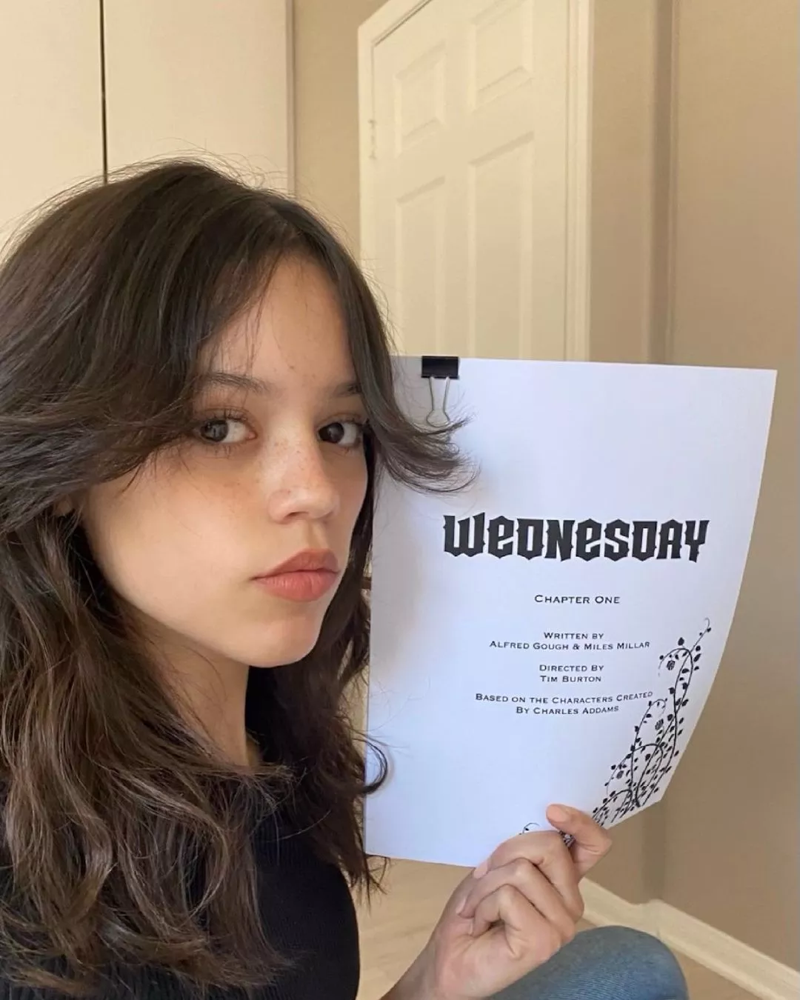
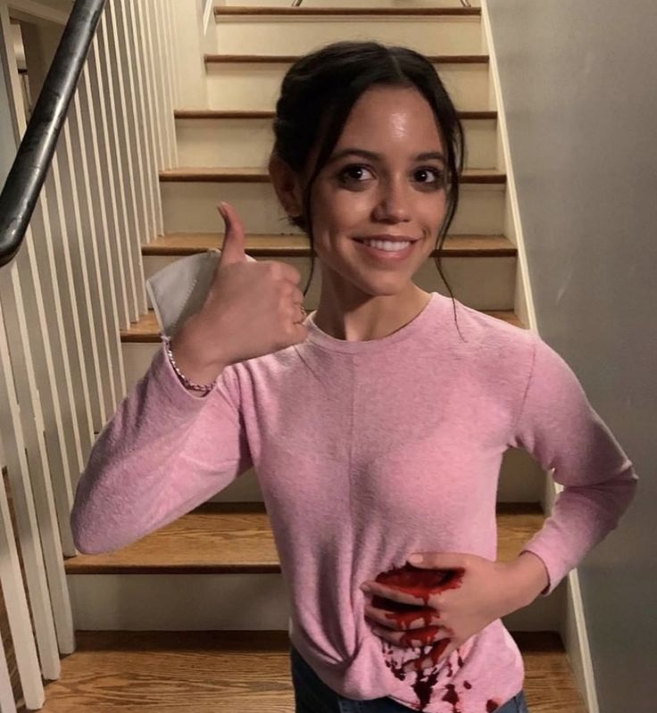
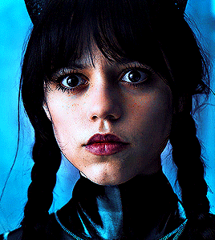
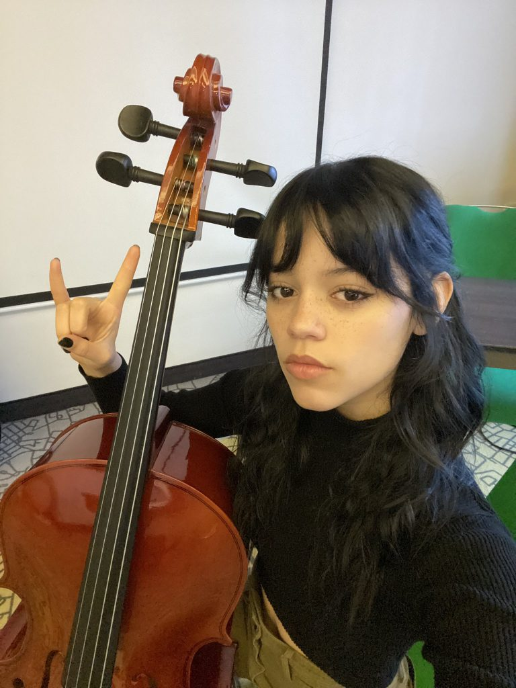

Introdução
Quem é Jenna Ortega? Jenna Ortega é uma das atrizes em ascensão em Hollywood, sendo destaque em vários filmes e séries de televisão. Neste site, vamos conhecer um pouco mais sobre ela, começando pela sua ascensão,
passando pelos filmes e séries em que ela já participou, suas premiações e indicações, fofocas e muitas outras coisas.
Então, se você tem curiosidades sobre ela, conheça a vida e a carreira da atriz!
Inicio de carreira e ascensão
Jenna Marie Ortega nasceu em 27 de setembro de 2002, em Palm Desert, no sul da Califórnia. Ela é uma atriz norte-americana, descendente de mexicanos e porto-riquenhos.
Seu pai é empresário e sua mãe é chefe de enfermagem. A ascensão de Jenna Ortega na indústria do entretenimento foi meteórica. O início de sua carreira foi como modelo e, aos apenas 9 anos de idade, já estava aparecendo em anúncios impressos e comerciais de televisão.

Agentes e diretores se interessaram e viram potencial nela para ser atriz graças à sua vibrante personalidade e ao seu talento
natural para a atuação. Ela se tornou uma das estrelas em ascensão de sua geração.
Em 2012, Jenna fez uma participação na série Rob, no episódio "Baby Bug". Logo em seguida, também apareceu em CSI: NY no episódio "Unspoken" como Aimee Moore. Esse seria apenas o começo de uma carreira
promissora para Jenna Ortega.
Atriz influenciadora e ativista
Além da vida de atriz, Jenna também é uma voz influente na sociedade. Ela é conhecida por sua defesa dos direitos das mulheres, dos imigrantes e da comunidade LGBTQ+.
Antes de consolidar sua carreira, Jenna encontrou dificuldades por causa de suas origens latinas. No entanto, ela superou esses desafios e se destacou na indústria.
Graças à sua persistência e ao foco em realizar seu sonho de atuar desde muito pequena.
Ela tem mais de 38 milhões de seguidores na sua conta do instagram onde ela posta fotos dela mesmo, filmes/séries
que está participando e também usa esse meio para postar suas ideias, e consequentemente inspirando seus fâs a também se envolverem em causas importantes.
Filmes que ela já participou
Como pode ver, não demorou muito para ela participar de mais produções e conseguir mais papéis. Abaixo está uma lista que menciona o filme e, em seguida, o papel/personagem que ela interpretou.
Em 2013:
- Iron Man 3 - Filha do vice-presidente
- Insidious: Chapter 2 - Annie
Em 2014:
- The Little Rascals Save the Day - Mary Ann
Em 2015:
- After Words - Anna Chapa
Em 2018:
- Saving Flora - Dawn
Em 2019:
- Wyrm - Suzie
Em 2020:
- The Babysitter: Killer Queen - Phoebe Atwell
Em 2021:
- Yes Day - Katie Torres
- The Fallout - Vada Cavell
Em 2022:
- Scream - Tara Carpenter
- Studio 666 - Skye Willow
- X - Lorraine Day
- American Carnage - Camila Montes
Em 2023:
- Scream VI - Tara Carpenter
- Finestkind - Mabel
- Miller´s Girl - Cairro Sweet
- Winter, Spring, Summer, of Fall - Remi
Em 2024:
- Beetlejuice 2 - Astrid Deetz
Ortega nas séries
Não é apenas nos cinemas. Jenna já participou em séries, sendo que algumas a consolidaram como atriz e lhe deram bastante fama.
Algumas séries que já participou.
Em 2012:
- Rob - Menina
- CSI: NY - Aimee Moore
Em 2013:
- Days of Our Lives - Harley
Em 2014:
- Rake - Zoe Leon
Em 2014-2019:
- Jane the Virgin - Jane Villanueva
Em 2015:
- Richie Rich - Darcy
Em 2016-2018:
- Stuck in the Middle - Harley Diaz
Em 2016-2020:
- Elena of Avalor - Princesa Isabel
Em 2016:
- Elena and the Secret of Avalor - Princesa Isabel
Em 2018:
- Bizaardvark - Izzy
Em 2019-presente:
- Big City Greens - Gabriella Espinosa
Em 2019:
- You - Ellie Alves
Em 2020:
- Home Movie: The Princess Bride - Princess Buttercup
Em 2020-2022:
- Jurassic World: Camp Cretaceous - Brooklynn
Em 2022-2023:
- Wednesday - Wandinha Addams e Goody Addams
Babados, fofocas e falcatruas
Cena de sexo???(OHHMAGAA)
Em janeiro de 2024, em um trecho do filme 'Miller´s Girl', Jenninha se envolve sexualmente com o ator Martin Freeman em uma cena do filme e o Síndicato de Atores de Hollywood decidiu mudar as regras de atuação desses profissionais fora dos sets de filmagens.
“Os coordenadores de intimidade são um recurso crucial em qualquer set para garantir a proteção de nossos membros que trabalham em cenas íntimas.
Os coordenadores de intimidade devem manter a confidencialidade do trabalho e da experiência de um ator na representação de cenas altamente sensíveis,
a menos que tenham a permissão do ator para compartilhar publicamente essas informações. A divulgação pública de detalhes sobre o trabalho de cena de um
ator ou confidências confiadas ao coordenador de intimidade sem o consentimento do ator é inaceitável”,
diz o sindicato.
Jenna tóxica???
A mana Jenna trouxe a público que ela não queria ser associada pelo personagem pelo resto da vida e reclama das adaptações da personagem ao straming.
No podcast "Armchair Expert" ela diz "Em Wandinha, não houve uma cena na qual eu disse, após chegar em casa de uma gravação, 'Ok, agora está tudo bem.'"
E segundo a opinião dela, muitos dos roteiros originais de "Wandinha" não faziam sentido para ela, do ponto de vista do personagem. Continuou falando que
mudou certas falas sem consultar os roteiristas da série.
O produtor Steven DeKnight critica a atriz no twitter a chamando de "tóxica" e "mesquinha"
"Esse tipo de declaração está além da mesquinhez e toxicidade. Amo o trabalho dela, mas a vida é curta para lidar com pessoas assim no mercado", twittou o produtor.
Saida do Pânico VII
No dia 22 de novembro de 2023, o Deadline, um portal de notícia, noticiou que Jenna Ortega não estará no elenco de Pânico VII por causa da agenda de filma-
gens da Segunda
temporada de Wandinha. Mas antes da noticia circular, haviam rumores que Ortega deixaria o elenco de Pânico em protesto à demissão da colega de elenco Melissa Barreira,
dispensa da franquia após comentários em suas redes sociais expressando apoio à Palestina em meio ao conflito Israel-Hammas.
Livro
Jenna lançou seu primeiro livro no inicio de 2021, It´s All Love: Reflections for Your Heart & Soul.
Esse livro é sobre histórias pessoais sobre sua experiência como latina em Hollywood e também discute experiências como paixões, fé, amizade, autoconfiança e depressão.
Violoncelo
Quem assistiu a serie, sabe que a personagem Wandinha, interpretada pela Jenna, tocava violoncelo, mas segundo ela, ela teve que aprender e adorou a experiência e já disse que vai dar continuidade no instrumento. Além de aprender violoncelo, ela teve aulas de esgrima, tiro ao alvo com arco e aprendeu alemão.
Ex vegana
Vegana faz muito tempo, acabou voltando a comer carne por conta de 'Wandinha', levando em consideração que a série foi filmada na Romênia, que enfatiza uma dieta baseada en carne, ovos, laticínios, pão e açúcar.
Wandinha
Falando na personagem, Jenna fez a audição para Wandinha coberta de sangue. Isso aconteceu porque a atriz tinha acabado de filmar a cena da morte de sua personagem em ‘X: A Marca da Morte’. Ortega então entrou em uma chamada no Zoom com Tim Burton que começou a rir sem parar da situação inusitada./p>
Prêmios e indicações
- Em 2018, ela recebeu o prêmio Imagen Awards na categoria de Melhor Jovem Ator por seu trabalho em Stuck in the Middle.
- Em 2022, ela recebeu o prêmio MTV Movie & TV Awards na categoria Desempenho mais assustado por seu trabalho em Scream.
- Em 2022, ela foi nomeada por Hollywood Critics Association Midseason Film Awards na categoria de Melhor Atriz por seu trabalho em The Fallout.
- Em 2023, ela recebeu o prêmio pela Austin Film Critics Association Awards na categoria Prêmio Robert R. "Bobby" McCurdy Memorial Artista Revelação por seu trabalho em Fallout, Scream, X e Studio 666.

Notas do Autor
Oi gente é o paiva, o criador dessa página, esse é meu primeiro grande projeto, onde eu aplico HTMl/CSS e um pouco de JavaScript.
Eu "terminei", ainda estou estudando JavaScript, então futuramente irei dar uma melhorada, espero que entendam algumas falhas e recomendo ver em página inteira, porque
senão fica estranho(ainda n ajeitei os tamanhos da imagem), mas é melhor mandar que menos um peso e já posso ficar mais tranquilo.
Qualquer bug, falha, etc. podem me falar pessoalmente se for meu amigo e se por acaso alguém que não me conheça e percebeu algo estranho pode manda um email que está ao final
da página. É isso espero que tenham gostado e tchau lindos!!!!